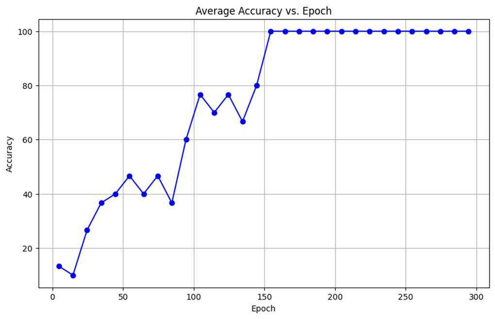

ICICT 2024 · Dhaka · pp. 130–134
Biologically Inspired Network Design to Train Only Through Forward Pass
Abstract
Commonly used neural network architectures in the industry almost entirely rely on backpropagation techniques like SGD to minimize the error of the network. It i s not only computationally expensive but needs to be done in a separate phase before inference time. To address these issues, this paper introduces a perceptron architecture that can train neural networks without backpropagation, a design inspired by the recent discovery of Brain Criticality Theory in neuroscience and the Hebbian Learning process of the biological brain. These neural computation units, called “Biceptrons” use a binary system to indicate either an active or inactive state in the network, analogous to the spike potentials of cortical neurons. The weights are adjusted with a special training algorithm only through a forward pass during inference time, where the weights gradually reach a steady state while learning the feature representation of the dataset. The authors present some toy problems of neural networks built using these “Biceptrons” units to demonstrate the application of this architecture.
Keywords
Biceptron; Hebbian learning; brain criticality; forward-pass training; biologically plausible neural networks.
